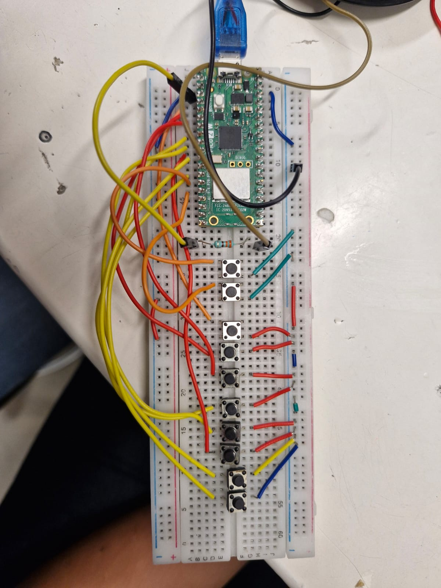

Digital Piano with PWM (RP2350)
Objective
Build an 8-key piano (one octave, Do to Do) with a buzzer and PWM. Each key plays its note while held, and two buttons raise or lower the volume by changing the duty cycle.
Materials
- Raspberry Pi Pico 2 W
- Passive buzzer (it has to be passive so it follows the PWM frequency)
- 10 push-buttons (8 keys + 2 volume)
- Protoboard, jumper wires, micro-USB cable
Circuit Diagram
GPIO2 → Buzzer (+) ; Buzzer (−) → GND
GPIO3 → Key Do → GND
GPIO4 → Key Re → GND
GPIO5 → Key Mi → GND
GPIO6 → Key Fa → GND
GPIO7 → Key Sol → GND
GPIO8 → Key La → GND
GPIO9 → Key Si → GND
GPIO10 → Key Do (high) → GND
GPIO11 → Volume up → GND
GPIO12 → Volume down → GND
(All buttons use the internal pull-up)

Digital piano connection diagram
With the pull-up, a button reads 1 when released and 0 when pressed, so I check for gpio_get(pin) == 0.
Source Code
#include <stdio.h>
#include "pico/stdlib.h"
#include "hardware/pwm.h"
#define BUZZER 2
#define TOP 1023
#define PRIMERA_TECLA 3
#define BTN_SUBIR 11
#define BTN_BAJAR 12
int notas[8] = {
1046, // Do
1175, // Re
1318, // Mi
1397, // Fa
1568, // Sol
1760, // La
1975, // Si
2093 // Do
};
int main() {
stdio_init_all();
//buzzer
gpio_set_function(BUZZER, GPIO_FUNC_PWM);
uint slice = pwm_gpio_to_slice_num(BUZZER);
uint canal = pwm_gpio_to_channel(BUZZER);
pwm_set_wrap(slice, TOP);
pwm_set_chan_level(slice, canal, 0);
pwm_set_enabled(slice, true);
//teclas
for (int pin = 3; pin <= 12; pin++) {
gpio_init(pin);
gpio_set_dir(pin, GPIO_IN);
gpio_pull_up(pin);
}
int volumen = 256;
while (true) {
// volumen+
if (gpio_get(BTN_SUBIR) == 0) {
volumen = volumen + 64;
if (volumen > 512) volumen = 512;
printf("Volumen: %d\n", volumen);
sleep_ms(50);
while (gpio_get(BTN_SUBIR) == 0) {}
sleep_ms(50);
}
// volumen-
if (gpio_get(BTN_BAJAR) == 0) {
volumen = volumen - 64;
if (volumen < 0) volumen = 0;
printf("Volumen: %d\n", volumen);
sleep_ms(50);
while (gpio_get(BTN_BAJAR) == 0) {}
sleep_ms(50);
}
// tecla presionada
int tecla = -1;
for (int i = 0; i < 8; i++) {
if (gpio_get(PRIMERA_TECLA + i) == 0) {
tecla = i;
break;
}
}
if (tecla == -1) {
pwm_set_chan_level(slice, canal, 0);
} else {
// divisor = reloj del pico / (nota * 1024)
float divisor = 150000000.0f / (notas[tecla] * (TOP + 1));
pwm_set_clkdiv(slice, divisor);
pwm_set_chan_level(slice, canal, volumen);
}
sleep_ms(10);
}
}
How it works
Pitch → clock divider
The PWM counter goes from 0 to TOP (1023), so one period is 1024 counts. With the 150 MHz clock:
| Key | Note | f (Hz) | Divider |
|---|---|---|---|
| GPIO3 | Do | 1046 | 140.04 |
| GPIO4 | Re | 1175 | 124.67 |
| GPIO5 | Mi | 1318 | 111.14 |
| GPIO6 | Fa | 1397 | 104.86 |
| GPIO7 | Sol | 1568 | 93.42 |
| GPIO8 | La | 1760 | 83.23 |
| GPIO9 | Si | 1975 | 74.17 |
| GPIO10 | Do | 2093 | 69.99 |
All the dividers are inside the valid range (1–256), which is why this octave works with TOP = 1023.
Volume → duty cycle
- Duty =
volumen / 1024. It starts at 256 (25 %) and moves in steps of 64, between 0 and 512. - The max is 50 % because that's the loudest a square wave gets on the buzzer. Going higher makes it quieter again.
Main loop (polling)
- Volume buttons:
sleep_ms(50)→ wait until released →sleep_ms(50), so one press = one change (debounce). - It scans the keys from GPIO3 up and keeps the first one pressed.
- No key → level 0 (silence). Key pressed → set its divider and the volume.
Results
- Each key plays its note while held and stops when released.
- The volume changes in noticeable steps and is printed on the serial monitor.
- With two keys pressed at the same time only the lower one sounds, because the scan stops at the first one.
Video
What I learned
- PWM also works as a tone generator: the divider sets the frequency and the duty cycle sets the volume.
- With
f = f_clk / (divisor × (TOP + 1))I could calculate each note's exact divider instead of guessing. - Polling works fine here because the loop only takes 10 ms.
- Limitations: it's monophonic (one PWM slice → no chords), and while a volume button is held the
whileblocks the keys. Using interrupts for those buttons, like in the roulette lab, would fix that.